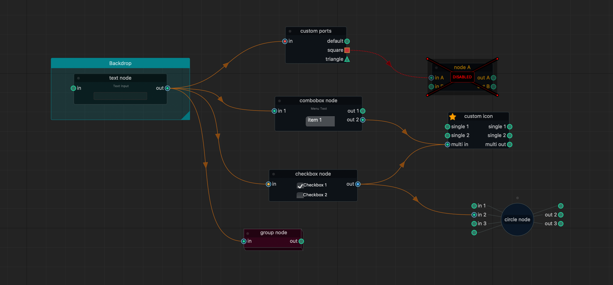
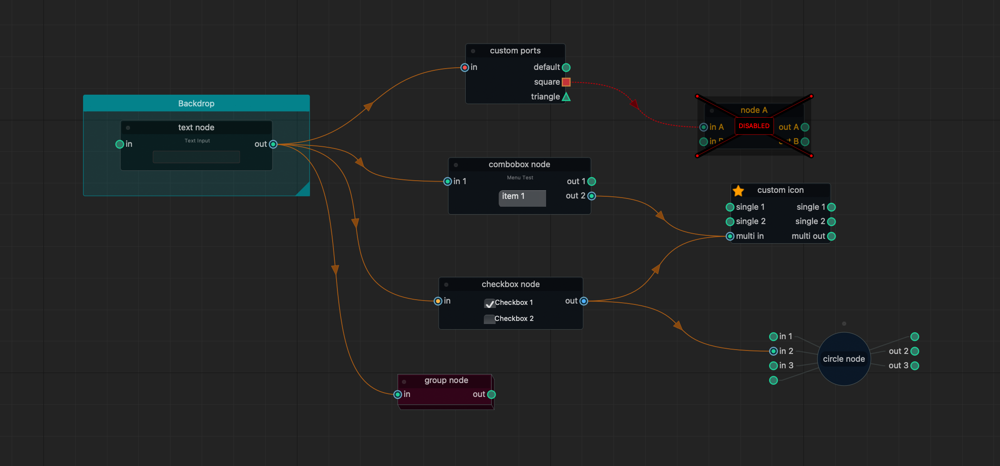

NodeGraphQt v0.5.3¶
NodeGraphQt a node graph UI framework written in python that can be implemented and re-purposed into applications supporting PySide2.
Issue Tracker: https://github.com/jchanvfx/NodeGraphQt/issues
API Reference
Widgets
NodeGraphQt a node graph UI framework written in python that can be implemented and re-purposed into applications supporting PySide2.
API Reference
Widgets